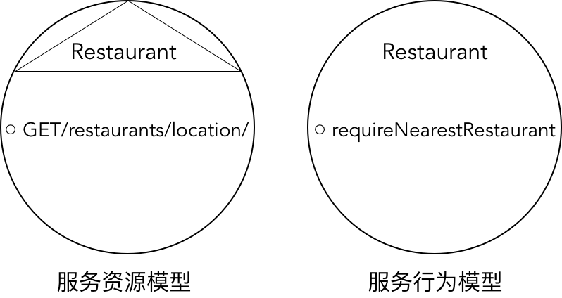

- 001 「战略篇」访谈 DDD 和微服务是什么关系？.md.html
- 002 「战略篇」开篇词：领域驱动设计，重焕青春的设计经典.md.html
- 003 领域驱动设计概览.md.html
- 004 深入分析软件的复杂度.md.html
- 005 控制软件复杂度的原则.md.html
- 006 领域驱动设计对软件复杂度的应对（上）.md.html
- 007 领域驱动设计对软件复杂度的应对（下）.md.html
- 008 软件开发团队的沟通与协作.md.html
- 009 运用领域场景分析提炼领域知识（上）.md.html
- 010 运用领域场景分析提炼领域知识（下）.md.html
- 011 建立统一语言.md.html
- 012 理解限界上下文.md.html
- 013 限界上下文的控制力（上）.md.html
- 014 限界上下文的控制力（下）.md.html
- 015 识别限界上下文（上）.md.html
- 016 识别限界上下文（下）.md.html
- 017 理解上下文映射.md.html
- 018 上下文映射的团队协作模式.md.html
- 019 上下文映射的通信集成模式.md.html
- 020 辨别限界上下文的协作关系（上）.md.html
- 021 辨别限界上下文的协作关系（下）.md.html
- 022 认识分层架构.md.html
- 023 分层架构的演化.md.html
- 024 领域驱动架构的演进.md.html
- 025 案例 层次的职责与协作关系（图文篇）.md.html
- 026 限界上下文与架构.md.html
- 027 限界上下文对架构的影响.md.html
- 028 领域驱动设计的代码模型.md.html
- 029 代码模型的架构决策.md.html
- 030 实践 先启阶段的需求分析.md.html
- 031 实践 先启阶段的领域场景分析（上）.md.html
- 032 实践 先启阶段的领域场景分析（下）.md.html
- 033 实践 识别限界上下文.md.html
- 034 实践 确定限界上下文的协作关系.md.html
- 035 实践 EAS 的整体架构.md.html
- 036 「战术篇」访谈：DDD 能帮开发团队提高设计水平吗？.md.html
- 037 「战术篇」开篇词：领域驱动设计的不确定性.md.html
- 038 什么是模型.md.html
- 039 数据分析模型.md.html
- 040 数据设计模型.md.html
- 041 数据模型与对象模型.md.html
- 042 数据实现模型.md.html
- 043 案例 培训管理系统.md.html
- 044 服务资源模型.md.html
- 045 服务行为模型.md.html
- 046 服务设计模型.md.html
- 047 领域模型驱动设计.md.html
- 048 领域实现模型.md.html
- 049 理解领域模型.md.html
- 050 领域模型与结构范式.md.html
- 051 领域模型与对象范式（上）.md.html
- 052 领域模型与对象范式（中）.md.html
- 053 领域模型与对象范式（下）.md.html
- 054 领域模型与函数范式.md.html
- 055 领域驱动分层架构与对象模型.md.html
- 056 统一语言与领域分析模型.md.html
- 057 精炼领域分析模型.md.html
- 058 彩色 UML 与彩色建模.md.html
- 059 四色建模法.md.html
- 060 案例 订单核心流程的四色建模.md.html
- 061 事件风暴与业务全景探索.md.html
- 062 事件风暴与领域分析建模.md.html
- 063 案例 订单核心流程的事件风暴.md.html
- 064 表达领域设计模型.md.html
- 065 实体.md.html
- 066 值对象.md.html
- 067 对象图与聚合.md.html
- 068 聚合设计原则.md.html
- 069 聚合之间的关系.md.html
- 070 聚合的设计过程.md.html
- 071 案例 培训领域模型的聚合设计.md.html
- 072 领域模型对象的生命周期-工厂.md.html
- 073 领域模型对象的生命周期-资源库.md.html
- 074 领域服务.md.html
- 075 案例 领域设计模型的价值.md.html
- 076 应用服务.md.html
- 077 场景的设计驱动力.md.html
- 078 案例 薪资管理系统的场景驱动设计.md.html
- 079 场景驱动设计与 DCI 模式.md.html
- 080 领域事件.md.html
- 081 发布者—订阅者模式.md.html
- 082 事件溯源模式.md.html
- 083 测试优先的领域实现建模.md.html
- 084 深入理解简单设计.md.html
- 085 案例 薪资管理系统的测试驱动开发（上）.md.html
- 086 案例 薪资管理系统的测试驱动开发（下）.md.html
- 087 对象关系映射（上）.md.html
- 088 对象关系映射（下）.md.html
- 089 领域模型与数据模型.md.html
- 090 领域驱动设计对持久化的影响.md.html
- 091 领域驱动设计体系.md.html
- 092 子领域与限界上下文.md.html
- 093 限界上下文的边界与协作.md.html
- 094 限界上下文之间的分布式通信.md.html
- 095 命令查询职责分离.md.html
- 096 分布式柔性事务.md.html
- 097 设计概念的统一语言.md.html
- 098 模型对象.md.html
- 099 领域驱动设计参考过程模型.md.html
- 100 领域驱动设计的精髓.md.html
- 101 实践 员工上下文的领域建模.md.html
- 102 实践 考勤上下文的领域建模.md.html
- 103 实践 项目上下文的领域建模.md.html
- 104 实践 培训上下文的业务需求.md.html
- 105 实践 培训上下文的领域分析建模.md.html
- 106 实践 培训上下文的领域设计建模.md.html
- 107 实践 培训上下文的领域实现建模.md.html
- 108 实践 EAS 系统的代码模型.md.html
- 109 后记：如何学习领域驱动设计.md.html
045 服务行为模型
如果将服务视为一种行为，就必然需要考虑客户端与服务之间的协作。服务行为的调用者可以认为是服务消费者（Service Consumer），提供服务行为的对象则是服务提供者（Service Provider）。为了服务消费者能够发现服务，还需要提供者发布已经公开的服务，因此需要引入服务注册（Service Registry），从而满足 SOA 的概念模型：
以服务行为来驱动服务的定义，需要从消费者与提供者之间的协作关系来确定服务接口。消费者发起服务请求，提供者履行职责并返回结果，这就构成了所谓的“服务契约（Service Contract）”。契约是义务与权利的一种规范。Bertrand Meyer 认为：
“对于一个大型系统来说，光保证它的各组成部分的质量是不够的。最有价值的是确保在任何两个组成部分的交接处设计明晰的彼此义务和权利规范，即所谓契约。”
在面向外部远程服务进行设计时，契约的设计尤为重要，它直接影响了整个系统的稳定性与性能。
虽然服务资源模型同样构成了服务契约，但当从行为角度来思考服务的定义时，行为导致的动态协作关系需要我们更多地考虑协作双方的权利和义务，这就无意中使得服务行为模型的定义暗合由 Bertrand Meyer 提出的“契约式设计（Design by Contract）”思想。Meyer 认为：
“契约的主要目的是：尽可能准确地规定软件元素彼此通讯时的彼此义务和权利，从而有效组织通信，进而帮助我们构造出更好的软件。”
Meyer 之所以把商业中的契约概念引入到软件设计中，目的是对消费者和提供者两方的协作进行约束。作为请求方的消费者，需要定义发起请求的必要条件，这就是服务行为的输入参数，在契约式设计中被称之为前置条件（pre-condition）。作为响应方的提供者，需要阐明服务必须对消费者做出保证的条件，在契约式设计中被称之为后置条件（post-condition）。
前置条件和后置条件是对称的，因此前置条件是消费者的义务，同时就是提供者的权利；后置条件是提供者的义务，同时就是消费者的权利。
以转账服务为例，从发起请求的角度来看，服务消费者为义务方，服务提供者为权利方。契约的前置条件为源账户、目标账户和转账金额。当服务消费者发起转账请求时，它的义务是提供前置条件包含的信息。如果消费者未提供这三个信息，又或者提供的信息是非法的，例如值为负数的转账金额，服务提供者就有权利拒绝请求。从响应请求的角度来看，权利与义务发生了颠倒，服务消费者成了权利方，服务提供者则为义务方。
一旦服务提供者响应了转账请求，其义务就是返回转账操作是否成功的结果，同时，这也是消费者应该享有的权利。如果消费者不知道转账结果，就会为这笔交易感到惴惴不安，甚而会因为缺乏足够的返回信息而发起额外的服务，例如再次发起转账请求，又或者要求查询交易历史记录。这就会导致消费者和提供者之间的契约关系遭到破坏。因此，遵循契约式设计的转账服务接口可以定义为：
public interface TransferService {
TransferResult transfer(SourceAccount from, DestinationAccount to, Money amount);
}
在这个服务 API 定义中，利用 SourceAccount 与 DestinationAccount 来区分源账户和目标账户；通过 Money 类型来避免传递值为负数的转账金额，同时 Money 还封装了货币币种，保证了转账交易结果的准确性；TransferResult 封装了转账的结果，它与 boolean 类型的返回结果不同之处在于，它不仅可以标示结果为成功还是失败，还可以包含转账结果的提示消息。
契约式设计会谨慎地规定双方各自拥有的权利和义务。为了让服务能够更好地“招徕”顾客，会更多地考虑服务消费者，毕竟“顾客是上帝”嘛，需要在权利上适当向消费者倾斜，努力让消费者更加舒适地调用服务。此时，应遵循“最小知识法则”，让消费者对提供者尽可能少地了解，从而消除掉用户一切不需要知道的复杂度。袁英杰在《该怎样设计 API?》一文中阐述了 API 定义哲学，即“当我们给用户提供 API 时，不应该由技术实现的难易程度来决定，而是站在用户的角度，消除掉一切不必要的复杂度，让用户可以最快速、最直接地达到他的目的。”从契约的角度讲，就是要将服务消费者承担的义务降到最少，让服务消费者只需要描述它真正需要描述的信息。
仍然以转账服务为例。服务消费者提供源账户、目标账户与转账金额是合理的，因为这些信息只有服务消费者才知道。如果我们定义的转账服务行为还要求服务消费者提供转账时间，就会造成过分的无理要求。且不说转账时间的准确性，倘若该信息同时被服务消费者与服务提供者拥有，基于“最小知识法则”，就应该由服务提供者来承担。如果一个服务提供者总是过分地对服务消费者提出更多要求，就会加重消费者额外的负担，让消费者变得不愿意“消费”该服务。
当服务行为设计的驱动者转向服务消费者时，设计思路就可以按照“意图导向编程（Programming by Intention）”的设计轨迹。Alan Shalloway 在《敏捷技能修炼》一书中阐释了何谓意图导向编程，即：
“先假设当前这个对象中，已经有了一个理想方法，它可以准确无误地完成你想做的事情，而不是直接盯着每一点要求来编写代码。先问问自己：‘假如这个理想的方法已经存在，它应该具有什么样的输入参数，返回什么值？还有，对我来说，什么样的名字最符合它的意义？’”
在定义服务行为模型时，也可以尝试采用这种方式进行思考：
- 假如服务行为已经存在，它的前置条件与后置条件应该是什么？
- 服务消费者应该承担的最小义务包括哪些？
- 而它又应该享有什么样的权利？
- 该用什么样的名字才能表达服务行为的价值？
在进行这样的意图导向思考时，应结合具体的业务场景。业务场景不同，需要定义的服务契约也不相同。例如都是投保行为，如果是企业购买团体保险，服务契约的前置条件需要包含保额、投保人、被保人、等级保益、受益人和销售渠道等，但如果是货物运输的运输保险，服务契约的前置条件则包括保额、货物名称、运输路线、运输工具和开航日期等。服务契约的后置条件虽然都是创建一个投保单，但是投保单的内容却存在非常大的差异。
在识别业务场景时，需要保证业务场景的合理粒度。划分场景粒度时可以参考如下两个特征：
- 为消费者提供了业务价值：服务对消费者有价值，就是能解决消费者的问题，达成消费者的目标，例如下订单对于买家就是有价值的，而验证订单有效性对于买家就没有价值，应作为下订单内部的子功能。
- 具有完整时序的线上操作过程，不能中断：当消费者发起对服务的请求时，执行过程具有明显的时序性，如果中间存在时序上的中断，就应该划分为两个不同的场景。例如投保服务，在录入投保信息后，会发起一个工作流，由核保人对录入的投保信息进行审核。由于核保人是一个人工处理的过程，就会导致录入投保信息到审核之间存在一个明显的时序中断。这时就应该分为两个不同的场景，对应两个不同的服务——投保服务与核保服务。
在确定服务契约时，还需要考虑作为前置条件和后置条件的输入参数与返回值应该定义成什么样的类型？我们需要考虑两方面的因素：
- 参数与返回值的序列化：通常需要定义 POJO 对象，通过 getter 和 setter 来表示属性。正因为此，一般不建议将服务参数与返回值定义为接口，因为在网络通信的背景下，对数据模型的抽象并无意义。
- 是否需要解除客户端对服务接口定义类型的依赖：RPC 方式不同于 REST 服务，服务消费者在调用远程服务时，需要在客户端获得远程服务的一个引用（相当于远程代理）；如果服务参数与返回值为自定义类型，就需要为客户端提供定义了这些类型的 JAR 包。一种方式是将服务契约的定义与实现分开，使得服务契约的 JAR 包可以单独部署在客户端。另一种方式则是采用泛化调用，即直接使用 Map 对象而非 POJO 对象来装配对象；但是，采用泛化调用会牺牲自定义类型的封装性，无法表达业务含义。
与服务资源模型一样，在确定服务行为时，需要先确定该行为的类别究竟是命令（Command）还是查询（Query），并遵循 Meyer 提出的命令查询分离（Command-Query Separation，CQS）原则。命令操作和查询操作具有迥然不同的特质。命令操作通常会带来副作用，因此它往往意味着状态的修改，可能不符合操作的安全性与幂等性。纯粹的查询操作则不然，因为它天然就是安全和幂等的。一旦将命令与查询分离，就意味着服务行为会按照各自的契约行事，只要明确了契约的前置条件，在调用时就可以推测程序的状态。如果二者合二为一，就无法分辨状态的变更究竟是因为调用端调用还是服务内部自身引起，从而带来难以预知的结果。
远程服务的行为更需要遵循命令查询分离原则。因为远程服务采用的网络通信是不稳定的，这就增加了对结果预判的复杂性。服务行为的失败或错误并不一定意味着服务行为执行失败，有可能是返回响应消息时的通信故障。由于调用者不知道服务失败的具体原因，为了保证服务行为执行成功，就需要发起对服务的重试（Retry）。为避免重试带来不可预知的后果，通常要求服务行为是幂等的。倘若遵循命令查询分离原则来设计服务行为，就只需要针对命令操作考虑幂等设计即可。
还是以转账服务为例。执行转账服务会扣除源账户的余额，并在目标账户中增加相同的金额，同时还会生成一笔新的交易记录。显然，转账服务属于命令操作，它会创建交易记录，并修改账户的余额值。当服务消费者发起转账服务请求时，可能因为网络通信故障导致转账失败。如果不考虑业务规则的约束导致的失败，则失败可能因为：
- 请求消息发送到服务端时发生通信故障，导致服务端无法收到服务请求。此时的转账交易不成功。
- 请求消息成功发送到服务端并正确地完成了转账交易，但在服务端返回应答消息时出现了传输失败。此时的转账交易成功，但消费者会认为转账失败，会再次发起转账请求。
为了避免第二种场景的重复转账，需要将转账服务设计为幂等，方法是利用唯一标识的业务 ID 对请求进行判断。修改前面定义的转账服务接口：
public interface TransferService {
TransferResult transfer(Source sourceAccount, Destination destAccount, Money amount, String transactionId);
}
transactionId 作为交易 ID 可以唯一标识每一次发起的转账交易。当服务提供者接收到转账请求时，首先通过 transactionId 到交易明细表中查询该 ID 是否已经存在，若存在，则认为该交易已经执行，就可以忽略本次请求，实现服务的幂等性。显然，服务的幂等性在一定程度上影响了服务 API 的设计。
在定义服务的 API 时，还应该考虑该服务行为究竟是同步操作还是异步操作。所幸，多数框架都能够做到无需修改 API 的定义即可透明地支持同步与异步操作。例如，Dubbo 框架就允许我们在服务消费者的配置中，将 async 属性设置为 true，自动实现消费者对服务发起的异步调用，接口并不需要做任何调整。比如，我们定义了查询最近餐厅的服务提供者：
public interface RestaurantService {
Restaurant requireNearestRestaurant(Location location);
}
该服务的实现为：
public class SphericalRestaurentService implements RestaurantService {
private static long RADIUS = 3000;
@Override
public Restaurant requireNeareastRestaurant(Location location) {
List<Restaurant> restaurants = requireAllRestaurants(location, RADIUS);
Collections.sort(restaurants, new LocationComparator());
return restaurants.get(0);
}
private double distance(Location start, Location end) {
double radiansOfStartLongitude = radians(start.getLongitude());
double radiansOfStartDimension = radians(start.getDimension());
double radiansOfEndLongitude = radians(end.getLongitude());
double raidansOfEndDimension = radians(end.getDimension());
return Math.acos(
Math.sin(radiansOfStartLongitude) * Math.sin(radiansOfEndLongitude) +
Math.cos(radiansOfStartLongitude) * Math.cos(radiansOfEndLongitude) * Math.cos(raidansOfEndDimension - radiansOfStartDimension)
);
}
}
很显然，该方法的实现为同步操作，但在服务消费者的配置文件中，却可以将其配置为异步操作：
<beans xmlns:xsi="http://www.w3.org/2001/XMLSchema-instance"
xmlns:dubbo="http://dubbo.apache.org/schema/dubbo"
xmlns="http://www.springframework.org/schema/beans"
xsi:schemaLocation="http://www.springframework.org/schema/beans http://www.springframework.org/schema/beans/spring-beans.xsd
http://dubbo.apache.org/schema/dubbo http://dubbo.apache.org/schema/dubbo/dubbo.xsd">
<dubbo:application name="smart-restaurants"/>
<dubbo:registry group="dddpractice" address="zookeeper://127.0.0.1:2181"/>
<dubbo:reference id="restaurantService" interface="xyz.zhangyi.dddpractice.smartrestaurants.api.RestaurantService">
<dubbo:method name="requireNeareastRestaurant" async="true" />
</dubbo:reference>
</beans>
一旦配置为异步操作时，服务消费者就可以通过 RpcContext 获得 Future<Restaurant>：
RestaurantService service = (RestaurantService)context.getBean("restaurantService");
Future<Restaurant> rFuture = RpcContext.getContext().getFuture();
Restaurant restaurant = rFuture.get();
服务资源模型与服务行为模型的区分在于建模的驱动力。服务资源模型是名词驱动的，首先得到的是资源；服务行为模型是动词驱动的，首先得到的是服务行为。仍然采用 Thomas Erl 建议的服务契约模型对 Restaurant 服务进行建模，二者在图示上的区别如下所示：

显然，服务资源模型提供的服务行为无法做到服务行为模型那样通过方法名直接表达“获得最近餐馆”的业务语义，但它却通过 URI 保证了接口的统一性，满足了服务版本的可扩展性。
服务契约的定义与设计还需要遵循远程服务的设计原则，例如考虑服务的版本、兼容性、序列化、异常等。同时，我们也可以结合 SOA 与微服务的服务设计原则来指导服务设计，例如保证服务契约的标准化，满足服务松耦合原则、抽象原则、可重用原则、自治原则等。这些内容实际上属于服务设计的范畴，在领域驱动设计中，可以结合限界上下文和上下文映射在战略设计阶段开展，这里就不再赘述。